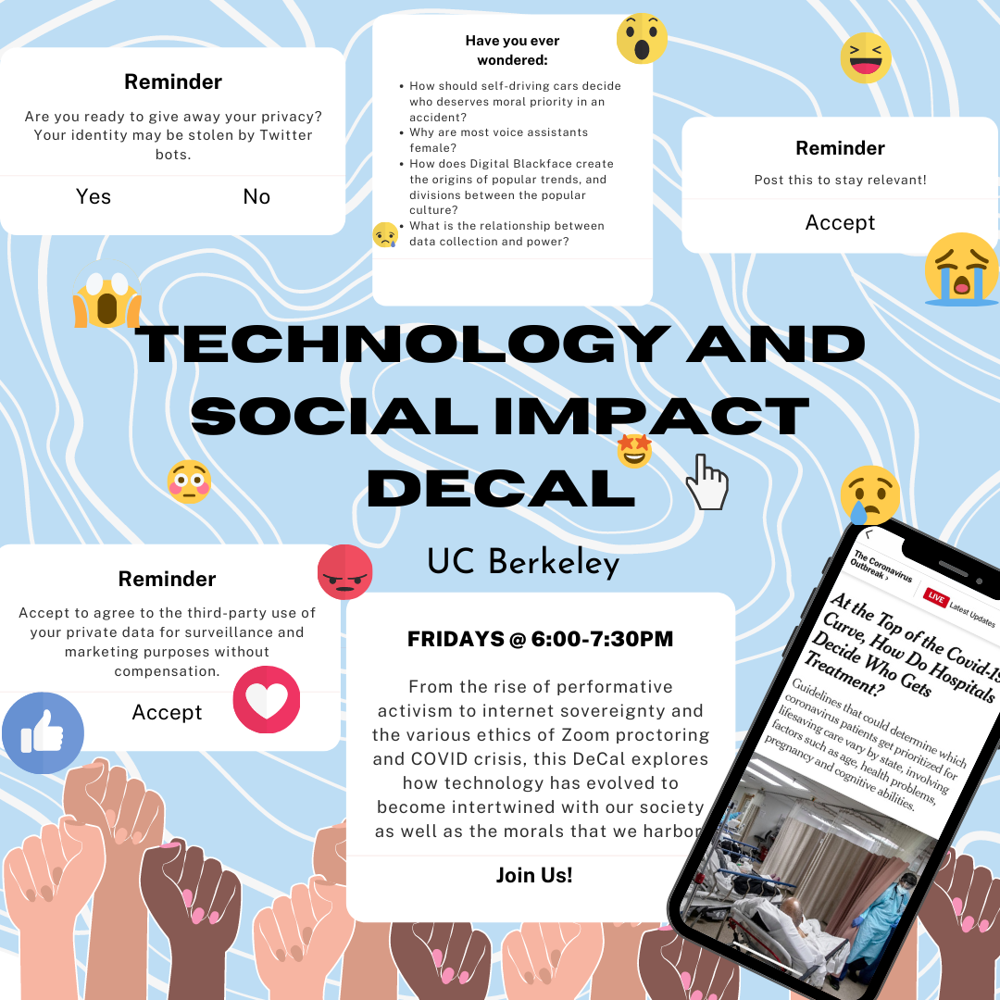

Current Initiatives
- Technology and Social Impact Decal
-
For the past few semesters, we have offered a decal focused on having conversations that explore the ethics of technology in various fields. Check out our DeCal page for more details!

- Speaker Series and Coffee Chats
-
We have some really exciting speakers planned for the coming semester! As we return to campus, we hope to have larger speaker series like in the past, but also some smaller, more casual conversations over some coffee.
For up-to-date information about our planned events, please refer to the calendar below:
Past Events
- Ethics in... with Nick Weaver, Josh Hug, and John Denero (Spring 2022):
-
We invited experts in the fields of security, education, and artificial intelligence to speak with us about the interesting ethical implications of different activities associated with their respective lines of work.
- Fairness and Equity in Tech with Arpita Singhal and Seyi Olojo (Fall 2021):
- Two PhD students currently involved in fairness-related AI research came and talked about their experiences, as well as what practical considerations to make when designing software tools.
- An EdTech Conversation with Gracie Elqura (Fall 2018):
-
A Google Software Engineer shared her expertise in educational technology with the Berkeley community.
Please reach out to us if you are interested in viewing recordings from these events!